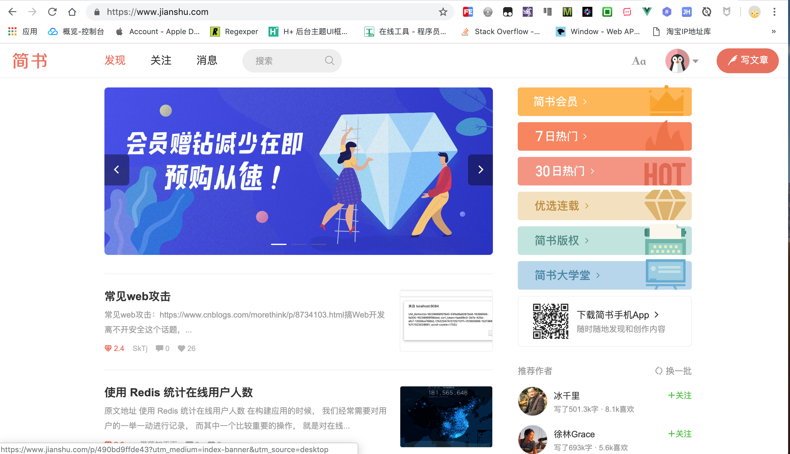
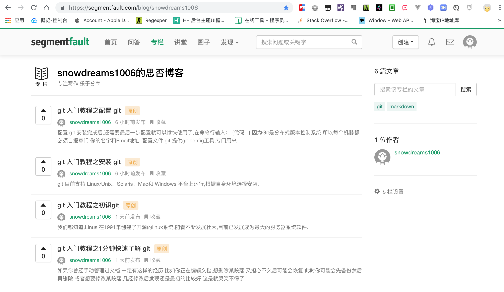
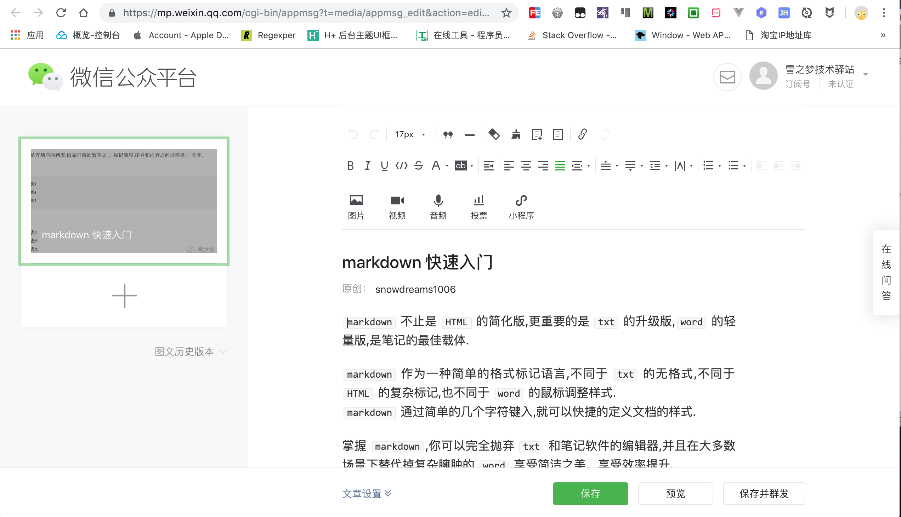
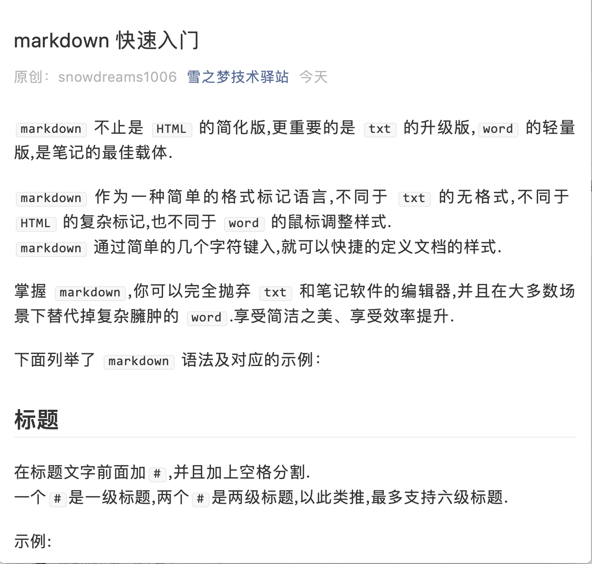
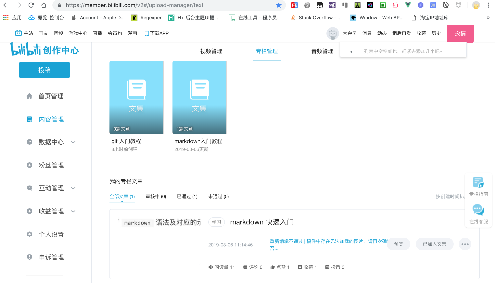

1. 如何写作
越来越多的人想写个人博客或者打算做自媒体,笔者也是一样. 最近在学习如何写博客,分享下创作经历,避免走弯路.
首先在于定位,不同的定位决定了不同的平台.由于笔者分享的大多是技术类博客,所以主战场是各大主流的技术类博客论坛,当然还搭建了自己的官网.
考虑到前期仅仅是分享技术博客,无需购买专门的服务器,因此寻求免费的解决方案.
笔者采用的是 github 搭建个人项目官网,优点是不花一分钱,就能免费开启 https 服务,缺点是国内访问速度慢.
下面分为两部分介绍博客的创作平台,一部分是个人官网,另一部分是第三方平台.
1.1. 个人官网
首先注册 github 账号(例如:用户名 snowdreams1006),然后新建特定规则的项目(例如:项目名 snowdreams1006.github.io),最后在项目下创建首页 index.html .现在访问 https://用户名.github.io/ (https://snowdreams1006.github.io/)即可.
个人官网的基本流程和特点如下:
- 利用
gitbook技术将markdown源码文件输出为html静态网页. - 将项目按照特定规则上传到
github网站公开托管,生成免费网站. - 源代码更新后再生成输出文件,然后一起上传到
github,个人官网自动更新.
项目源码 snowdreams1006.github.io,项目官网 https://snowdreams1006.github.io/
点击图片会自动跳转到 https://snowdreams1006.github.io/
1.2. 第三方平台
这里列举了常逛的第三方平台,将从新手视觉看待各家平台特点,试图分析各家平台特点从而决定是否适合自身.
一家之言,仅供各位参考.
排名不分顺序,只是笔者文章依次同步的顺序而已.
1.2.1. 1. CSDN https://www.csdn.net/
SEO 优化不错,阅读量稳定,网页端阅读体验一般,手机端干净清爽,阅读量相对稳定.
不限制作者本人点赞,重复统计本人浏览记录,突出阅读数,其次是评论数和点赞数.
1.2.2. 2. 博客园 https://www.cnblogs.com/
SEO 优化不错,博客开通需审核,支持发布首页,但也可能因质量不达标而被移除.页面风格满满的时代感,目前暂无手机端.
限制作者本人推荐,不统计本人浏览记录,突出推荐数,其次是阅读量和评论数.
1.2.3. 3. 开源中国 https://www.oschina.net/
国内版 github ,高质量文章可能会被推荐至首页,否则阅读量几乎为零.
限制作者本人点赞,不统计本人浏览记录,突出访问量,其次评论数和点赞数.
1.2.4. 4. 简书 https://www.jianshu.com/
文艺范的自媒体平台,简洁优美文艺性十足,SEO 优化不错,日更活动鼓励持续更新,简书钻和简书贝等虚拟货币增添写作乐趣!

不限制作者本人喜欢,不统计本人浏览记录,突出简书钻,其次阅读量,评论数和点赞数.
1.2.5. 5. 思否 https://segmentfault.com/
国内版Stack OverFlow,专注于技术问答,界面风格绿色清新,SEO 优化不错,但忽略阅读量.
限制作者本人点赞,不统计本人浏览记录,首次发布专栏需要审核,突出投票数,其次是收藏数,最后是阅读数.

1.2.6. 6. 掘金 https://juejin.im/timeline
异军突起,风头正盛,时间流布局,掘金小册子是一大亮点,但SEO 很差!
不限制作者本人点赞,不重复统计本人浏览记录,突出点赞数,其次是评论数,最后是阅读量.
1.2.7. 7. 慕课网手记 https://www.imooc.com/article
丰富的免费教学视频,正所谓"成也萧何败萧何",手记模块相比其他专业平台还有着不少的差距,SEO 一般.
不限制作者本人点赞,重复统计本人浏览记录,文章需要审核,手记功能更像是配套教学视频而诞生的笔记,不太像专门博客.
1.2.8. 8. 微信公众号 https://mp.weixin.qq.com/
目前仅支持富文本编辑器,依靠粉丝流量,碎片化阅读体验,SEO 几乎没有.

需要花费精力运营公众号,限定当天阅读量和"在看"数,如果没有粉丝,那肯定没有阅读量.

1.2.9. 9. B站专栏 https://www.bilibili.com/
弹幕视频网站,开通专栏投稿,目前仅支持富文本编辑器,不适合博客,SEO 可忽略.
适合视频教程,暂不适合博客且投稿专栏限制较多,毕竟不是专业做博客的平台,谁让我误入了呢!

1.3. 总结
大多数平台都有阅读量,评论,点赞等维度数据统计,但不同平台有着不同的推荐策略,优缺点如下:
csdn:SEO不错,阅读量稳定,适合新手积累信心.博客园:SEO不错,阅读量有保障,适合新手提高自信.开源中国:SEO一般,阅读量有挑战,适合优质文章博取官方推荐.简书:SEO不错,阅读量很少,日更活动和简书钻奖励等形式鼓励持续创作,适合自我督促.思否:SEO一般,阅读量一般,适合技术问答.掘金:SEO很差,阅读量一般,适合优质文章.慕课网手记:SEO一般,适合教学视频的配套笔记.微信公众号:SEO很差,适合粉丝用户.B站:SEO很差,适合教学视频.
从以上分析中可以看出,只要是优质文章无论到哪都受欢迎,然而"罗马并非一日建成",优质文章的诞生不在一朝一夕,所以新手期应该选择适合自己的平台发展,积累到一定程度后方能"春风得意马蹄疾,一日看遍长安花".
个人建议:
- 选择简书平台,保持日更,同步到CSDN积累自信,推送到博客园,提高自信.
- 官网保持更新,运营公众号慢慢积累粉丝,最后再考虑开源中国,掘金和思否.